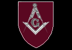

I have put this page together in order to share my Masonic experiences with others with the hope that I can relate what Masonry means to me. I am writing this both for the experienced Mason, and the person who has no idea what Masonry is.
What is Freemasonry? (The official answer)
- Masonry is many things to many people. Many years ago in England
it was defined as, "a system of morality, veiled in allegory, and illustrated
by symbols." It is a course of moral instruction using both allegories
and symbols to teach its lessons. The legends and myths of the old
stone cutters and masons, many of them involved in building the great cathedrals
of Europe, have been woven into an interesting and effective way to portray
moral truths.
- has a basic philosophy of life that places the individual worth of each man high on its pedestal, and incorporates the great teachings of many ages to provide a way for individual study and thought.
- has great respect for religion and promotes toleration and equal esteem for the religious opinions and beliefs of others.
- provides a real working plan for making good men even better.
- is a social organization.
- has many important charitable projects.
- has a rich worldwide history.
- is a proven way to develop both public speaking and dramitic abilities, and provides an effective avenue for developing leadership.
One modern definition is: "Freemasonry is an organized society of men, symbolically applying the principle of Operative Masonry and achitechture to the science and art of character building." In other words, Masonry uses ageless methods and lessons to make each of us a better person.
Thus Masonry:
What Freemasonry is to me?
As far as I'm concerned, Masonry has several things going for it.
First, it is religious and spiritual, while not belonging to or being a part of any one religion. Any man may become a Mason, as long as he believes in a Supreme Being. After that question, the subject of particular religion or denomination is never brought up. In fact, at Masonic meetings, Masons are prohibited from discussing both religion and politics, as we are taught that these two topics often inspire men's passions (as they should) and can disrupt the harmony and peacefulness of our gatherings.
To me, religion is very personal and individual and I don't want to go someplace and have to listen to other people talk about their religious beliefs. That's why I don't go to church. Before I discovered Masonry, there were many things that made me want to go to church, even though I didn't want to listen to someone telling me how I was supposed to communicate with God. I missed the moral lessons that one gets at church. I missed the feeling of belonging to something that was larger, older and more important than myself. I missed the commeraderie that come from being with people that felt the same as I. I missed the solmnity of ancient ritual. But, through Masonry, I was able to obtain all of these things, while still being able to honestly maintain my personal spiritual beliefs.
I mentioned above that Masonry teaches morals, and it does. It teaches honesty, fidelity, truth, faithfulness, charity, tolerance, and a general love for mankind. One of modern Masonry's main goals is charitable works, and Masons are stongly encouraged to become active in local charities and to generally help others in anyway they can. But I think the most important moral teaching that comes from Masonry is self-confidence and self-reliance. Masonry in the United States has been very strong from before the Revolutionary War through to the present, although now is is somewhat in decline. One reason for this is that Masonry promotes individualism, the same spirit that ran through America in the 17th, 18th and 19th centuries, but is now out of fashion. In this day and age when most people would rather find someone to blame (or sue) for their problems, Masonry stands increasingly alone in encouraging the idea that men make their own destinies here on earth, and that if something is wrong, it should be fixed. It is no coincidence that Andrew Jackson, the "poster child" of individualism was a Mason, as well as President.
Another great moral lesson that Masonry teaches is that of tolerance, equality, and being un-prejudicial. At a meeting of Masons, all men are equal, be they President, King, scholar, workman or beggar. Nor are people to be judged by other beliefs or appearances. Thus, the religion of a person doesn't matter, nor does a person's skin color or ethnicity. On the topic of why there aren't any women Masons, see the section below.
Another thing about Masonry that I like, I mentioned briefly above,
but I'd like to go into a little bit more detail. There are written
records that can definately trace Masonry back to the year 1717.
Our own stories and myths say that Masonry is much older than even that.
Masons had a gigantic role in the founding of the United States.
George Washington, Benjamin Franklin, Paul Revere, and John Hancock are
only a small handful of the leaders of early America who were Masons.
Masonry has a long and influential history, both in this country and the
world. It gives me a good feeling to be a member of this ancient
intstitution, and although my name will never be remembered by history,
the name of Masonry will be. And as a Mason, so will I.
I've heard some bad things about Masonry
The largest group of "anti-masons" base their dislike for us on religious
grounds. To make things as confusing as possible, there are several
religious reasons not to like us. Most of these are due to misunderstandings
of what we are.
Don't Masons worship the Devil?
No. Of course not. In our rituals, we use the term, "Supreme Architect of the Universe" instead of God. This is done for two reasons: to keep or rituals or prayers generic enough so that it will not be found objectionable to any of the many religions present, and to keep the ritual in our stone building metaphor. In the end, it's no different than saying, "The Creator."Don't Masons think they can gain entrance to Heaven merely by doing charitable works?
No. Masonry encourages its members to be charitable, but so does every religion that I can think of. We do not have any secret, "back door" into Heaven.Is Masonry a religion?
This is a common misconception. No it is not. You must have a religion of your own first, when you become a Mason. Masonry merely adds to your own religious experience. I like to think of Masonry as an "expansion set" to Masonry (if you haven't looked at the rest of this web site, I am an avid game player, so this analogy works well for me).Don't Masons have their own ressurection myth?
No. In one of our initiation rituals, there is a story about a master mason who is murdered and his body hidden. Other masons find the body, search him to see if he has anything on him that might reveal the Masonic secrets he took to his grave, and re-bury him. There is no ressurection.Isn't there a Papal Bull denouncing Masons?
Yes, there is. But it dates from the 18th century. Masonry has always taught that men should be free thinkers, free from oppression, and treated justly. In the 18th century, the world was still ruled by Kings who could order a man's death on a whim. The Catholic Church had supported this idea for over a thousand years and didn't see any reason to stop. Also, they didn't like the idea of people thinking to much for themselves. Thinking for yourself and trying to tell others could be punished by death. Remember what happened to Galileo.Masonry accepts members from different religions and treats them equally. But there is only one true religion. Isn't that wrong?
We don't think so. We leave it up to each individual to decide what is religiously (and politically) right and wrong and trust our fellows to make the right decision for them. If people think we're doing something wrong by being tolerant of different religions, we shake our heads sadly and leave them to their opinions. No one like that will become a Mason (or would want to).
Another group of questions and misunderstandings center around Masonry's secrecy and our resemblance to a conspiracy.
Is Masonry a secret society?
The official answer is no, we are a society with secrets, but not a secret society. The full answer is a little more complicated. In the 19th century and early 20th century, "secret societies" flurished. They were everywhere, every gentleman who wasn't a hermit belonged to one or more, and Masonry was one of them. You could look in the phone book under Secret Societies, and there they were, dozens or hundreds of them in large cities. But these "secret societies" were gentlemen's clubs, philosophical societies, and other sorts of primarily social organizations. They were not the conspiratorial sort of secret society that we think of nowadays.Do Masons (or are they trying to) control the world?
No.If you're not trying to take over the world, what are your goals?
Masonry's primary goal is to take good men and make them better. It's secondary goals include helping the community, enjoing the company of other men, and promoting Masonry. We have no political goals (except perhaps to promote freedom throughout the world).You say you're not a secret society, but you do have secrets. What sort of secrets?
Well if I told you, they wouldn't be secrets, would they? Sorry, I just had to say that. These days, Masonry actually has very few secrets. Our Lodges (the building where we meet) are clearly labeled and are listed in the phone book. Many of our rituals have been "declassified" and while not easily accessable to the public, are not secret. Many of the words of our rituals are not secret and could be shown to you mby any Mason. There are still some that we do keep to ourselves. These include certain words, symbols and body motions that we can use to identify ourselves as Masons (you can easily see why we keep these to ourselves, otherwise anyone could claim to be a Mason when they are not). there are also some rituals (or parts of ritual) which are secret. Why? I'm not really sure. They are some of the parts which clearly define what Masonry is, so I would imagine that these are secret to safeguard those ideals from those who are not Masons. Or it could be just out of tradition. Outside the US, many of the Masonic rituals are not considered secret.Don't Masons agree to having horrible penalties done to them if they reveal Masonry's secrets?
Yes and no. The exact penalties are secret, so I can't share them with you, but they are bloody, excessive and deadly. But they are also symbolic of the lessons of that portion of Masonry. For example, if your are caught stealing and your hand is cut off, it is symbolic of what you have done. Before a new Mason is asked to swear himself to secrecy, he is told that the penalties are symbolic and that no one is going to come after him with an axe. The worst penalty that Masonry can bestow on someone is expulsion from Masonry. In the State of Washington, there have been motions to the Grand Lodge for at least 2 years to have the official ritual changed to clearly and unequivicolly state that these punishments are symbolic. It failed last year and I expect it to fail this year too. The feeling among most brothers I have tlaked to is that if we change our ritual here because some outsiders don't like, what will they want to change next.Wasn't there a big to do back in the 1800s where Masons killed someone for revealing secrets?
Yes there was. The event is referred to as the Morgan Affair. A Mason named Morgan was going to publish a book revealing many of Masonry's secrets. Several of the local Masons probably got overzealous and Morgan disappeared never to be seen again. 15 or 20 Masons were indicted for helping in his abduction and murder. They were all found innocent by judges who were Masons. This raised a huge amount of bad feelings toward Masonry, and actually spawned a national Anti-Masonic political party that was quite successfull. Masonry had a very bad reputation after that and many Lodges closed. Masonry hobbled along for several decades with very low membership and then slowly reasserted itself, to become very popular again in the last half of the 19th century.The last section of questions and answers are the rest of the frequently asked questions that don't fit into the other two cateories.
Aren't you all just a bunch of male chauvinist pigs? (or Why are only men allowed to be Masons?)
The rest of this page is still under construction. Sorry for the inconvience.